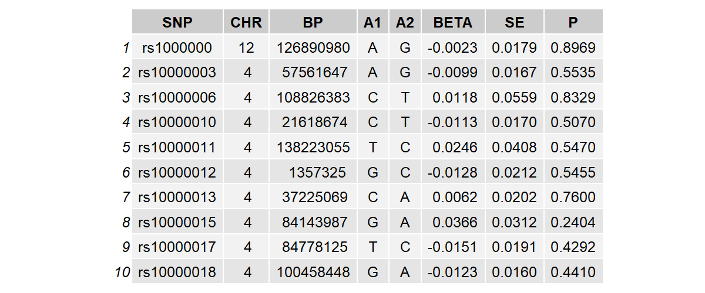

Introduction
Welcome to the MERLIN (MEndelian Randomization for Linear INteraction) package.
Traditional Mendelian Randomization (MR) relies on genome-wide association study (GWAS) summary statistics to infer the average causal effect of an exposure on an outcome. However, it is increasingly recognized that causal effects may not be uniform across populations but rather exhibit heterogeneity driven by environmental factors.
MERLIN is designed to estimate this causal effect heterogeneity. By systematically integrating summary statistics from both GWAS and Genome-Wide Interaction Studies (GWIS), MERLIN provides a robust statistical framework to evaluate how environmental variables modulate the causal pathway from exposure to outcome.
Key Features
Summary-Data Driven: Only requires GWAS and GWIS summary statistics, bypassing the need for individual-level genotype data (which is often restricted due to privacy concerns).
Robust Framework: Effectively accounts for sample overlap and linkage disequilibrium (LD) among instrumental variables.
Comprehensive Output: Provides estimates, standard errors, and p-values for both the main causal effect and the interaction (heterogeneity) effect.
Installation
The development version of MERLIN can be installed directly from GitHub using the remotes package.
Note: MERLIN depends on the Rcpp and RcppArmadillo packages for computational efficiency. This requires appropriate C++ compiler configurations (Rtools for Windows, and Xcode command-line tools for Mac OS/X).
To install the package, execute the following commands in your R console:
if (!requireNamespace("remotes", quietly = TRUE))
install.packages("remotes")
remotes::install_github("shilab-ecnu/MERLIN")Once installed, load the package:
Data Requirements
To successfully perform causal inference with environmental interactions using MERLIN, you need to prepare specific datasets. The core inputs consist of four sets of summary statistics and a reference panel for LD estimation.
Summary Statistics Format
MERLIN requires four summary statistics files:
Exposure GWAS (expgwas): Main genetic effects on the exposure.
Exposure GWIS (expgwis): Genetic-environmental interaction effects on the exposure.
Outcome GWAS (outgwas): Main genetic effects on the outcome.
Outcome GWIS (outgwis): Genetic-environmental interaction effects on the outcome.
MERLIN can still be applied when GWIS data are unavailable for either the exposure or the outcome (see the Data Analysis section for further details). All summary statistics files must be tab-delimited text files (they can be gzipped, e.g., .txt.gz). They must contain the following standard columns, with exact column names in the header:

Constructing GWIS Data from Stratified GWAS
In many real-world scenarios, direct GWIS summary statistics might not be publicly available. However, if the environmental factor is a binary variable (e.g., Sex: Male/Female), you can derive both GWAS and GWIS inputs from stratified summary statistics. Assuming sex is coded as Male = \(1\) and Female = \(-1\), and that the allele directions are perfectly aligned between the two datasets:
GWAS (Main Effect): Can be generated by meta-analyzing the male and
female data using inverse-variance weighting (e.g., using software like
METAL, see https://github.com/statgen/METAL). After installing the
software, the analysis can be executed via the command line (e.g., in
Linux or other shell environments) using a configuration file. A sample
configuration file ‘metal.config.Testosterone.txt’ is available for
download: https://figshare.com/articles/dataset/Data_for_MERLIN/29910116.
GWIS (Interaction Effect): The SNP interaction effects and their standard errors can be derived using the following formulas: \[\hat{b}_{gwis,j}=\frac{1}{2}(\hat{b}_{male,j}-\hat{b}_{female,j})\] \[se(\hat{b}_{gwis,j})=\frac{1}{2}\sqrt{(se(\hat{b}_{male,j})^2+se(\hat{b}_{female,j})^2}\]
Reference Panel Data
To account for Linkage Disequilibrium (LD) structure during instrumental variable selection (LD clumping) and to estimate sample overlap, MERLIN requires a reference panel. The reference panel must be in PLINK binary format (.bed, .bim, .fam). For European ancestry studies, the 1000 Genomes Project European panel is highly recommended.
You will also need a genomic partition file (e.g.,
all.bed) to divide the genome into structured LD blocks
separated by recombination hotspots. This block-wise partitioning
facilitates efficient and parallelized regional LD matrix
estimation.
If you do not have these files, a pre-formatted reference panel and LD block file for European populations are provided alongside our package data at: https://figshare.com/articles/dataset/Data_for_MERLIN/29910116.